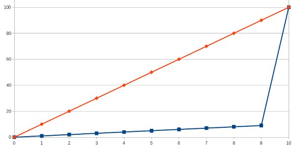

寅吃卯年糧，卯吃寅人糧
圖片授權： Public domain image( 來源 )
高二時，讀的是二類組，歷史、地理課不重要，高中老師也知道，所以會來教二類組的，不是等退休，就是帶著休閒心態而來。當時的歷史老師上課從來沒有同學聽懂他的鄉音，所以我們都在臺下自習、睡覺。不過，地理老師就不一樣了，她認為你都來學校上課了，聯考既然不考你們歷史、地理，但也不用浪費這 50 分鐘，她會為我們介紹世界的奇景、風俗、文化，至今我仍記得一個赤道帶原住民的生活習俗。
Read more...那是你的命!
營造業的人員意外發生率一直高於製造業，因為在營造業中，作業期程較短，人員流動較快，在防護措施、教育訓練上比製造業難以控制。
以下是幾個營造工地意外的影片，沒有血肉模糊的畫面，請安心觀看。
Read more...得獎的是...
利益揭露 : 使用本頁連結下單綠大地清潔酵素系列商品，筆者會收到回饋金。
本圖( iclean.jpg )部份內容含有 Bio-enzyme.com 製作之產品及內容，非全屬 hoamon 所創作
上面那張相片的構圖，其實我比較想請 老婆 扮成兔女郎餵我吃麵。不過她性格沒我那麼外向且也要顧及淑女的形象，就此作罷。況且，她沒受過星爺的教育，不懂這構圖優在那裡。尤其是問她：「星爺是誰?」，也答不出他就是改善社會風氣，風迷萬千少女，提高青年人內涵，刺激電影市場，玉樹臨風的整人專家！
所以我連提都不敢提呀! 不過，若有看倌願意發揮修圖技術，只要修圖後內容不違中華民國法律，像是修圖內容 若 包含其他人著作，就 須 取得其他人的授權，或是儘量利用其他 CC BY-SA 的作品，並且也是以 CC BY-SA 授權發佈(當然，這衍生著作的著作權人是您)。
我人小氣但是有度量，你寄給我，我就放在本文供大眾瀏覽，也會清楚標示該張圖片的著作權人為您。別客氣，儘量修吧!
不過，究竟何種原因，本文要放這張相片?
Read more...Bitbucket 付費方案真是佛心來著
利益揭露 : 使用本頁連結下單綠大地清潔酵素系列商品，筆者會收到回饋金。
本圖( bitbucket_plans.png )部份內容含有 Bitbucket.org 製作內容，非全屬 hoamon 所創作
之前一直誤會 Bitbucket.org 付費方案內容，以致作了一些錯誤決策。問題是怎麼發生的呢? 上圖中用紅線劃記的那句話： “Someone with read or write access to one of your private repositories.” 我之前是解讀成：『只要是你的私有儲存庫所共同管理的用戶，不管是擁有讀取或是寫入權限的人數，全都算在你的用戶數上。』而所謂的 your ，我是認定為『參與』，結果在經過一段日子的確認後，才發現是『擁有』，而這『擁有人』資格在一個私有儲存庫上，只會有一人。
Read more...公共債務法草案爭議
本圖( public_debt.png )部份內容含有 玉山銀行 製作內容，非全屬 hoamon 所創作
這幾天，吵的比較正經的事，應該就是郝市長怨嘆陳院長推動新版公債法草案，大幅限縮臺北市的舉債空間，約略少了 2250 億的舉債額度。郝市長為此上告馬總統，並轉述總統親口回應『免煩惱』，以藉此倒打陳院長一耙。
但其實誰跟誰吵架，誰去找爸爸，爸爸又得要罵誰? 這些事並不是我在乎的。我在乎的是地方政府舉債問題。
Read more...Monospaced fonts of Netbeans in Ubuntu
使用文泉驛等寬正黑，字會糊掉
我的 Netbeans 預設字型 Monospaced 一直有中英文不對齊的問題，但其實曾經在不知版本的 Ubuntu 上解決過，因為沒有作紀錄，所以升級後，就又出現這種問題，後來參考其他文章，本想代換成 MONACO 字型，但這個”通狼蚵樂”的字型，在我的 Netbeans 上，就是會出現方塊字。搞不定呀! 只得放棄。
Read more...逃稅天堂是世界貧富差距巨增的催化劑 — 「逃稅天堂」讀後感
本文是探討貧富差距的第一篇，主文在 貧富差距 。
吉尼係數
吉尼係數是用來分析國家的貧富差距現象有多嚴重的一個指數，但我個人對它抱持懷疑態度，因為它只計算了收入分佈情形，卻沒有考慮擁有者識別度，這什麼意思? 我用一個例子說明：
某社會總共有 10 個人，其中有一人的收入佔總比 91 % ，而剩下 9 個人的收入各佔總比例 1 %，這個社會吉尼係數很大(有多大，請自己算，我懶得算)，但如果在自由不管制的條件下，該社會中擁有 91 %收入的人，每年輪流換人坐， 10 年過去，平均每個人都有一年時間擁有 91 % 的收入。試問，這個社會的貧富差距很大嗎?
解決貧富差距問題，不見得一定要大家收入差不多，也可以是透過大風吹的方法讓大家輪流坐。
Read more...貧富差距
本圖( wealth_gap.png )部份內容含有 中央印製廠 製作內容，非全屬 hoamon 所創作
目前臺灣新聞大概不脫幾個主題： 『政府無能』、『貧富差距』、『青年高失業』、『軍公教退休人員該死』。也有陪襯一些：『誰喜歡誰』、『誰生小孩』、『誰離婚』的花邊，不過我向來對這些無益世界的主題沒什麼興趣。而前面四個主題，從我小時候就時常聽說，並沒有完全斷過。
接下來我將談談『貧富差距」、『青年高失業』及『軍公教退休人員該死』的問題。
本文是第一個主題，要談的是『貧富差距』。
一開始，我的疑問是這樣子的，大家都說：『臺灣政府無能，讓貧富差距愈來愈大。』，但我看很多國家也都發生貧富差距愈來愈大的現象，那這些國家首長、文官也都無能嗎? 可是他們有些人是從哈佛、芝大、牛津…這些名校畢業的，為什麼國家治理能力會這麼糟糕?
Read more...StartSSL.com Web SSL 憑證代購
下圖為綠標憑證在瀏覽器的顯示情形：
本圖( greenbar.png )部份內容引自 https://www.startssl.com/ ，並非全屬 hoamon 創作
StartSSL.com 有提供我們這些已作過 Personal Identity Validation 的人 ( 詳見 Ho600’s SSL Certification ) 去幫別人購買 2 年效期憑證的 方案 ，如果有需要我可以協助購買。收費分五個等級，並有三個但書：
Read more...